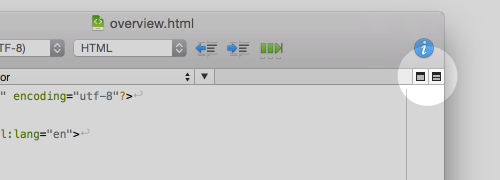

To split a document window into multiple panes, choose View > Split View, or, click the icon on the right edge of the navigation bar.
To close a split view, choose View > Close Split View, or, click the second icon from the right edge of the navigation bar.

The default orientation to split views can be set in Preferences > Window > Split view. You can also change split orientation choosing View > Stack Views Horizontally (or Vertically) in menu.